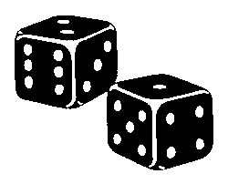

Rolling the Bones
One of the things that came out of my PhD research is a framework (part of the overall Zar probabilistic programming system) for building samplers for discrete probability distributions with formal proofs of correctness in Coq. One such example of a discrete distribution is the n-sided die.
Consider the following hypothetical: Suppose you want to roll a 6-sided die but you don’t have one lying around. You do have a coin though, which presumably is not biased (i.e., it is fair, with equal probability of flipping heads or tails). How could you simulate rolls of the die using only the fair coin?
Samplers built with Zar can be thought of as fair coin transformers,
taking as input a fair coin (represented as a stream of uniformly
distributed Booleans where true stands for heads and false for
tails) and producing as output a stream of samples from the desired
probability distribution. The proofs of correctness say that as long
as the input coin is fair, the output samples will indeed be
distributed according to the intended distribution.
In this article, we’ll look at Zar’s answer to the question of simulating an n-sided die using a fair coin, and then we’ll see how to use it via the Zar OCaml package (and its Haskell equivalent) to generate samples that are formally proved to be uniformly distributed. Although Zar supports sampling from arbitrary discrete distributions, we’ll just focus on uniform sampling (“rolling an n-sided die”) for now.
You might think that uniform sampling is trivial and shouldn’t require formal verification, but the reality is that bugs in uniform samplers such as “modulo bias” are a notorious vulnerability in cryptographic systems. Rigorous testing can only take you so far; to quote Edsger Dijkstra: “Program testing can be used to show the presence of bugs, but never to show their absence!” The samplers built using Zar come with a priori formal guarantees of the accuracy of their output distributions, which for the n-sided die means no modulo bias, period.
Simulating an N-sided Die
First let’s look at a high-level algorithm for simulating an n-sided
die. We’ll start with the special case of when n is a power of 2,
and from there we can generalize to any n > 0.
Dyadic Dice
When n is a power of 2, the solution is easy: flip the coin
lg(n) times and interpret the resulting string of outcomes as the
bits of a binary encoded integer, where heads denotes 1 and
tails denotes 0. For example, to simulate an 8-sided die (with
values ranging from 0 to 7), we roll the coin lg(8) = 3 times to
generate a bit sequence such as 010 (interpreted as the integer 2)
or 110 (interpreted as 6). We can visualize this process as a
complete binary tree where each branch represents a flip of the coin
and each leaf contains a possible output in the range [0,7):
TODO: tree diagram
By looking at the tree representation we can clearly see that that the
probabilities of all possible outcomes are exactly equal to (1/2)³ = 1/8.
Rejection Sampling
But what if n isn’t a power of 2? One approach is to flip more
bits than are actually needed, and whenever the resulting sample
exceeds n simply throw it away and try again. I.e., implement a
rejection sampler:
Flip
lg(n)+1bits to obtain a bit sequence representing integerk.If
k < n, acceptkas the sample. Otherwise, reject the sample and return to step 1.
We’re basically just taking a sampler for the first power of 2
greater than n and wrapping it in a loop that repeats when the
sample it produces is ≥ n. It’s intuitively obvious that all
accepted samples have equal probability because they have equal
probabilities under the base sampler inside the loop. We can visualize
these rejection samplers too as binary trees (though not necessarily
complete binary trees) where rejected leaves loop back to the
root. E.g., for a 6-sided die:
TODO: rejection tree diagram
You might notice that it’s technically not a tree since it contains cycles. However, we can think of it instead as convenient notation for the infinite binary tree that repeats a copy of itself upon rejection rather than looping around:
TODO: rejection infinite tree diagram
So it really is a tree (with repeating self-similar structure) as long as you allow for infinite trees, which are no problem in a lazy language like Haskell and can be encoded using “thunks” in non-lazy languages or as coinductive types in proof assistants like Coq and Agda.
One downside of our move to rejection sampling is that we can no
longer take termination for granted. The 6-sided die sampler could
conceivably take the rejection path at every iteration and loop
forever without ever producing a sample. However, we can see that the
probability of rejecting n times in a row is (1/4)ⁿ, which tends
to 0 as n goes to +∞. Thus, the probability of rejecting
infinitely many times is 0, and the probability of eventually
terminating after n steps for some n is therefore 1. In other
words, the 6-sided die sampler is an “almost
surely” terminating
process, which for our purposes is good enough to ensure practical
utility. A similar argument applies for any other rejection sampler
with nonzero probability of accepting the sample at each iteration.
The Zar OCaml Package
The Zar OCaml package provides a simple wrapper API around formally verified samplers extracted from Coq. The easiest way to get it is through opam:
opam install zarOnce installed, you can simply list zar as a dependency in your dune
project to gain access to everything in the Zar namespace. A sample
project containing the code in this article can be found here.
Since there doesn’t seem to be a standard streaming library for OCaml (although streaming looks promising), Zar defines its own stream type with the following interface (from zar.mli):
(** Streams / Lazy infinite lists. *)
type 'a stream =
| SCons of 'a * (unit -> 'a stream)
(** First element (head) of a stream. *)
val first : 'a stream -> 'a
(** Rest (tail) of a stream. *)
val rest : 'a stream -> 'a stream
(** Take the first n elements of a stream. *)
val take : int -> 'a stream -> 'a list
(** Drop the first n elements of a stream. *)
val drop : int -> 'a stream -> 'a stream
(** Map a function over a stream. *)
val map : ('a -> 'b) -> 'a stream -> 'b stream
(** Build a stream from a head and tail. *)
val scons : 'a -> 'a stream -> 'a streamIf you recall from our introduction, Zar samplers can be thought of as
fair coin transformers. The basic construction for the n-sided die
is therefore given by die_transformer:
val die_transformer : int -> bool stream -> int streamFor any n > 0, die_transformer n is a function that transforms a
stream of fair coin flips into a stream of n-sided die rolls. To start
rolling the die, we just need to apply the transformer to an
appropriate source. Zar contains a default source of fair coin flips
built on OCaml’s Random module:
(** Default uniformly distributed random bit stream. *)
val bits : unit -> bool stream
(** Initialize PRNG used for default bit stream. *)
val seed : unit -> unitBy applying die_transformer 6 to bits (), the following code
generates a list of 10 rolls of a 6-sided die:
let die = Zar.die_transformer 6 @@ Zar.bits () in
let samples = Zar.take 10 die in
(* Do something with samples *)Or, the following equivalent shortcut for using the default source of coin flips:
let samples = Zar.take 10 (Zar.die 6) in
(* Do something with samples *)The Zar package supports not only n-sided dice but also biased coins and arbitrary finite distributions specified by lists of weights. You can learn more about them in the package README.